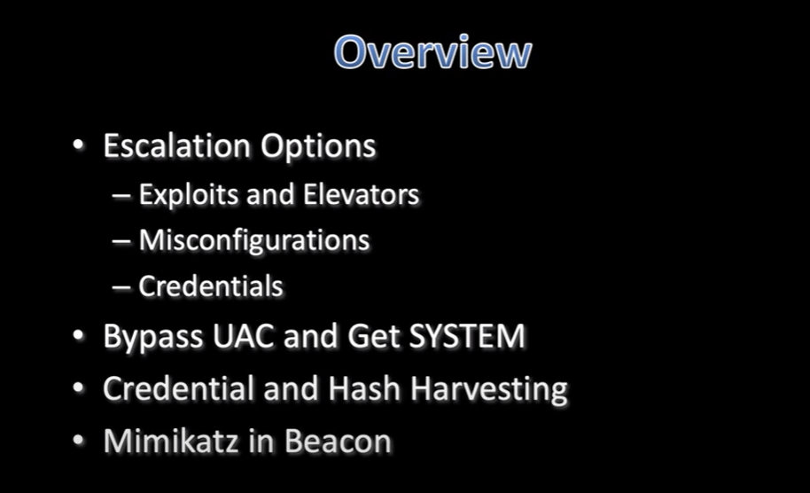

- This one is gonna be a lot of screenshots...


The Difference Between Elevate vs. RunAsAdmin- Elevate
- spawn an elevated session
- runasadmin
- bring your own weaponizations!
- drop an EXE to disk and run it
- run command to weaken target
- use [session]-> Access-> One-Linerto generate a Powershell one-line to spawn a session